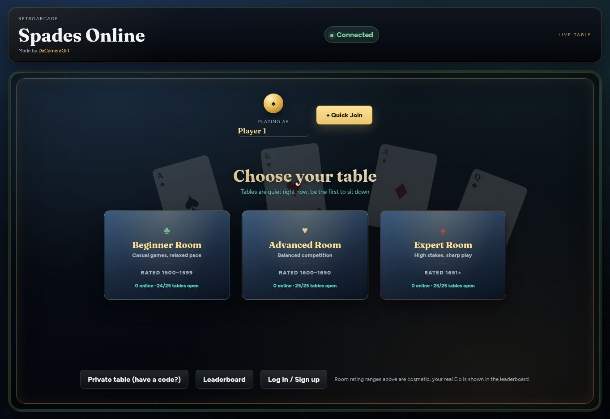
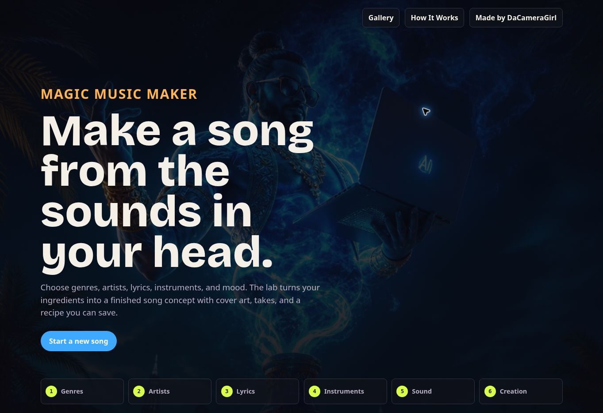
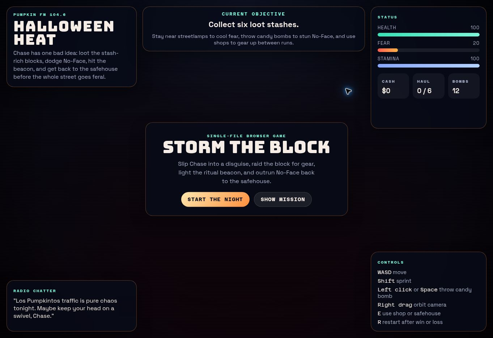
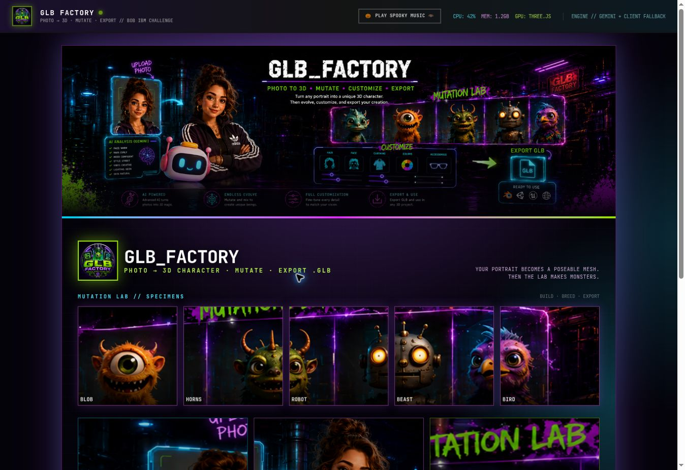
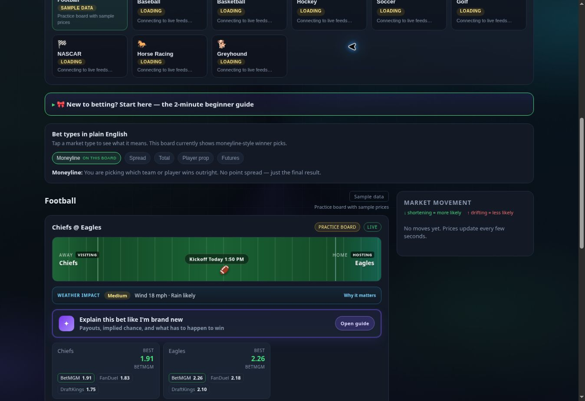

A LOOK INSIDESpades Online
Get four friends around a virtual table and play a real game of Spades together, even from different places.
Live ProjectMADE BY ANGELA · OPEN FOR EXPLORING
I make games, music playgrounds, and tools that started with a curious “what if?” Here are five you can actually try.
Explore the projectsTHE GOOD STUFF
Every card leads to a real, live project.

A LOOK INSIDEGet four friends around a virtual table and play a real game of Spades together, even from different places.
Live Project
A LOOK INSIDEMix musical styles, sounds, and moods to dream up a track that's entirely your own.
Live Project
A LOOK INSIDEA Halloween chase: collect six stashes, dodge No-Face, and make it back to the safehouse.
Live Project
A LOOK INSIDEStart with a photo and turn it into a 3D model you can view and use in other projects.
Live Project
A LOOK INSIDECurious about sports odds? See what the numbers mean and what a bet could pay, without the guesswork.
Live Project